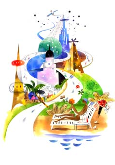

|  |
| 2019年からブログの内容を変えようと思いつつ、進んでません。もう少しお待ちください。 |
|
From Keiko ...April 8, 2019
|
| ようこそ!日記と写真のページです.+.☆..+.* |
| ☆最新の日記☆ |
|
記録に残しておきたい事柄を掲載 2005年1月以降はブログで更新中 +++最終更新日: 2018.12.1 |
| ☆アメリカの生活(日記)☆ |
| 1997年から書いてきた日記のインデックス すべての日記のタイトルを日付別と項目別で 載せてます |
| ☆プロフィール/リンク集☆ |
| 相互リンクをアップしました。 留学時のコンテンツはここに残しています +++最終更新日: 2012.8.25 |